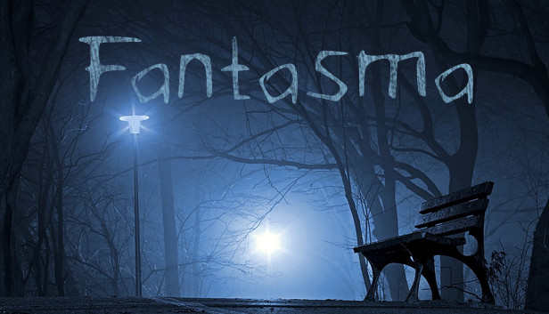

A Inocência da Morte: Um Conto de Almas Perdidas. O Pequeno Fantasma desperta num lugar onde o tempo parece ter esquecido de andar. O céu é um reflexo líquido e as estrelas sussurram lembranças de vidas passadas.
Ele não lembra seu nome, nem por que está ali. Só sabe que deve ajudar as almas que vagam, presas entre o que foram e o que ainda não aceitaram ser.
O Relojoeiro – Senhor Élio Varnen. Élio Varnen foi um relojoeiro conhecido por sua precisão quase sobrenatural. Trabalhava sozinho em uma oficina no topo de uma colina, onde o vento fazia os sinos tocarem como um coral distante. Seu último trabalho era um relógio que marcaria o tempo do coração — um projeto que nunca terminou.
Ele morreu sentado à sua bancada, com o olhar fixo nos ponteiros imóveis. Dizem que o tempo parou naquele instante. Desde então, sua alma repete, sem descanso:
“O tempo me deve um minuto…”
Busca: completar sua última criação para libertar sua alma.